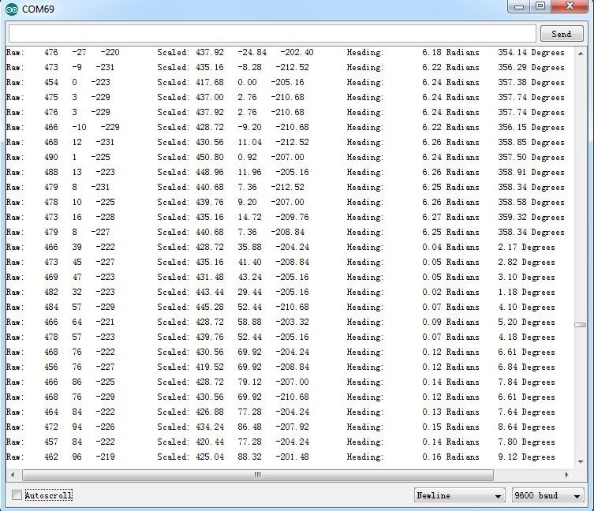

This 3-axis digital compass features a low field magnetic sensing multi-chip module HMC5883L, which provides up to 1° to 2° heading accuracy. HMC5883L consists of high-resolution HMC118X series magneto-resistive sensors, as well as Honeywell developed ASIC containing amplification, automatic degaussing strap drivers, offset cancellation and 12 bit ADC. With peripheral power management circuit added, this is an easy to use and reliable compass module for low cost compassing and magnetometry.
Model:SEN12753P
This demo is going to show you how to read raw data, how to calibrate the data with your local magnetic declination angle and how to get heading angle.
First off, before any action you are going to take, you need to prepare a parameter you are going to use in your demo. That's your local magnetic declination.
You can find it out in degree via the magnetic declination webpage. For example, mine is -2°37’, which is -2.617 degree.
Then transfer it from degree to radians, and there you get the "declinationAngle". For example, in my case, declinationAngle = -2.617 * π / 180 = -0.0456752665 rad. Three significant figures are enough. So I would shorten it into -0.0456 rad. And this is the parameter you are going to replace the value of "declinationAngle" in the domo code with.
Now let's start to run your compass.
1. Plug the 3-axis compass into the I2C port of Grove - Base Shield.
2. Download the library file: Digital Compass Library. Unzip it into the libraries file of Arduino IDE by the path: ..\arduino-1.0.1\libraries.
3. Open the demo by the path:File -> Example ->Digital Compass ->HMC5883L_Example.
4. Replace the value of variable "declinitionAngle" with the one you've figured out already.
5. Upload the Code. Please click here if you do not know how to upload.
6. Check the output result by opening the serial monitor.

1.You should have got a raspberry pi and a grovepi or grovepi+.
2.You should have completed configuring the development enviroment, otherwise follow here.
3.Connection
4.Navigate to the demos' directory:
cd yourpath/GrovePi/Software/Python/
nano grove_compass_lib.py nano grove_compass_example.py
import grove_compass_lib
c=grove_compass_lib.compass()
while True:
print "X:",c.x,"Y:",c.y,"X:",c.z,"Heading:",c.headingDegrees
c.update()
time.sleep(.1)
5.Run the demo.
sudo python grove_compass_example.py